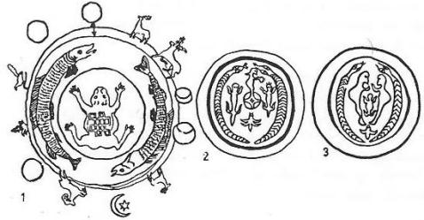

"Dünya bir deniz idi, ne gök vardı, ne bir yer,
"Uçsuz, bucaksız, sonsuz, sular içreydi her yer!
"Tanrı Ülgen uçuyor, yoktu bir yer konacak,
"Uçuyor, arıyordu, katı bir yer, bir bucak.
"Kutsal bir ilham ile, nasılsa gönlü doldu,
"Kayıptan gelen bu ün, ona bir çare buldu.
"Göklerden gelen bir ses, Ülgen'e buyruk verdi:
"- Tut önündeki şeyi, hemen yakala!" Dedi.
"Ülgen bu emre uydu, uzattı ellerini,
"içinden tekrarladı, Semânın sözlerini.
"Denizden çıkan bir taş, fırladı çıktı yüze,
"Hemence taşı tuttu, bindi taşın üstüne!
"Artık Ülgen memnundu, rahatı bulmuş idi,
"Üzerinde duracak bir yeri olmuş idi.
"Göklerin emri ile, bulunca Ülgen durak,
"Artık vakit gelmişti, gökleri yaratacak!
"Ülgen hep düşünmüştü, ta göklere bakarak:
" - Bir dünya istiyorum, bir soyla yaratayım!
"Bu dünya nasıl olsun, ne boyla yaratayım!
"Bunun çaresi nedir, ne yolla yaratayım!"
"Bir Ak-Ana (Ak-Ene) var idi, yaşardı su içinde,
"Ülgen'e şöyle dedi, göründü su yüzünde:
" - Yaratmak istiyorsan, sen de bir şeyler Ülgen,
"Yaratıcı olarak, şu kutsal sözü öğren!
"De ki hep, "Yaptım oldu!" Başka bir şey söyleme!
"Hele yaratır iken, "Yaptım olmadı!" Deme!
"Ak-Ana bunu dedi, sonra kayboluverdi,
"Denize dalıp gitti, bilinmez noluverdi.
"Ülgen'in kulağından bu buyruk hiç çıkmadı,
"insana bu öğüdü iletmekten bıkmadı:
" - Dinleyin, ey insanlar! "Var'ı yok demeyiniz!
"Varlığa yok deyip de, yok olup gitmeyiniz!"
"Ülgen yere bakarak: " - Yaratılsın yer!" Demiş.
"Bu istek üzerine, denizden yer türemiş.
"Ülgen göğe bakarak : " - yaratılsın Gök!" Demiş.
"Bu buyruk üzerine, üstünü gök bezemiş!
"Tanrı Ülgen durmamış, ayrıca vermiş salık,
"Bu dünyanın yanına, yaratılmış üç balık.
"Bu büyük balıkların, üstüne dünya konmuş,
"Balıklar çok büyükmüş, dünyaya destek olmuş.
"Dünyanın yanlarına, iki de balık konmuş,
"Dünya gezer olmamış, bir yerde kalıp donmuş.
"Bir başka balık ise, yere gerilmiş imiş,
"Kapkaranlık kuzeye, başı çevrilmiş imiş.
"Ortadaki balığın başı tam kuzeydeymiş,
"Tufan hemen başlarmış, yönü az değişseymiş.
"Onun başı her zaman, tam yönle durmalıymış,
"Bu yön hiç değişmeden, kuzeyde olmalıymış.
"Onun başı az düşse, tufanlar başlar imiş,
"Tufanla taşan sular, dünyayı kaplar imiş.
"Başı zincirler ile, bu yüzden bağlanmıştı,
"Başın oynamaması, bu yolla sağlanmıştı.
"Zincirler bağlanmışmış, ortadaki direğe,
"Balık nolur, ne olmaz, kımıldamasın diye!
"Tanrı balık işini, verdi Mandı-Şire'ye
"Mandı-Şire düzeltti, başı dönse nereye.
"Günlerden bir gün yine, yer suya gömülmüştü,
"Çünkü balığın başı aşağıya düşmüştü.
"Dünya yaratılınca, Tanrı rahatı seçti,
"Oturmak için yine, Altın-Dağ'ına geçti.
"Çok büyük bir dağ idi, Altın-Dağ dedikleri,
"Ayla Güneşe değer, gökteydi delikleri.
"Bulunurdu Altın-Dağ, gökle yer arasında,
"Ülgen de otururdu, bu dağın ta başında!
"Dağın etekleriyse, dünyaya değmez idi,
"Bir adam boyu kadar, durur da düşmez idi.
"Dünya yaratılışı, altı günde olmuştu,
"Yedinci günde ise, Bay-Ülgen uyumuştu.
"Bir gün yattıktan sonra, Bay Ülgen kalktı yine,
"Etrafına bakındı, neler yarattım diye.
"Bizimkinden başkaydı, kendine eş dünyası,
"Onun eğildi yalnız, Ay ve Güneş dünyası,
"Dokuz ayrı dünya da, fazla yaratılmıştı,
"Birer cehennem ile, bir de yer katılmıştı.
"Dünyaların büyüğü, Han-Kurbustan-Tengere,
"Bu dünyalar içinde, yok o dünyadan üzre!
"Ülgen bu dünyasına, verdi yardımcı bir Han,
"Bu Han'ın adı idi, Mangızın-Matmas-Burkan.
"Tanrılar barınağı, Han-Kurbustan-Tengere,
"Cehennemi'nin adı, Mangız-Toçiri-Tamu,
"Altın-Telegey ise, onun yerin ise namı
"Cehennemi yaparken, Tanrı hiç boş durmamış,
"Matman-Kara adıyla, bir de mühür atamış.
"Doksan dokuz dünyanın, ortancalar ortası,
"Adı Ezre-Kurbustan, Tengere, Gök dünyası.
"Bu dünya müdürünün kendisi de idi Han,
"Belgein-Karatlu, Türün-Musıkay Burkan.
"Kurulduğu yer ise, Altın-Şarka adlı yer,
"Cehennemine herkes, Tüpken-Kara-Tamu der.
"Biri bu Cehennem'i, idare eder baştan,
"Bu da kutsal ruhlardan, bir Matman-Karakçı Han,
"Dünyamıza gelince, dünyalar düzeninde,
"En küçük olanıdır, insan yaşar içinde.
"İnsan'ın Dünyasına derler Kara-Tengere,
"İdare eder onu, kutsal büyük May-Tere.
"Dünya cehennemine, toptan Kara-Teş derler,
"Kerey-Han adlı biri, onu idare eder.
"Sanma ki bizim dünya, dünyalar içre tektir,
"Otuz üç katlı gökle, dünya çok çok yüksektir.
*
"Yine günlerden bir gün, Tanrı Ülgen denize,
"Bakarak duruyordu, şaşırdı birden bire,
"Bir toprak parçacığı, sularda yüzüyordu,
"Toprağın üzerinde, birde kil duruyordu.
"Toprak üstündeki şey, dedi, nedir acaba,
"İnsanoğlu bu olsun, insana olsun baba,
"Görünmeğe başladı, insan gibi bir şekil,
"Birden insan olmuştu, toprak üstündeki kil.
"İnsanda toplanmıştı, her çeşitten yeterlik,
"Bu ilk insanın ise, adı olmuştu Erlik.
"İnsan yaratan Tanrı, ortalardan kayboldu,
"Erlik de yola çıktı, arayıp onu buldu.
"Tanrı'nın gönlü temiz, yücelerden yüceydi,
" - Bir küçük kardeşim ol! Diye, Erlik'e dedi.
"Erlik Tanrı Ülgen'in kardeşi olmuş idi,
"Fakat nedense kalbi, hırs ile dolmuş idi.
"Erlik yaratılınca, gezip, tozup, eğlendi,
"Aradan günler geçti, birden durup söylendi:
" - Ben niçin olmayayım, Tanrı'dan daha yüksek,
"Tanrı neden dolayı, göklerde olsun bir tek!
"Ben niçin olmayayım, hem kuvvetli, hem yüce,
"Bu bir kabahat midir, ben doğduysam yenice!
"Daha ileri gidip, gözleri hırsla doldu,
"Tanrı'yı kıskanarak, ezelî düşman oldu.
"Güçlü Tanrı'ya baktı, kutsal gücü kıskandı,
"Söylenmeğe başladı, kendi nefsine kandı:
" - Ah! Keşki ben de böyle, insan yaratabilsem!
"Dünya sahibi olsam, dünya yaratabilsem!"
"Tanrı baktı ki. Erlik, pek bir işe yaramaz,
"Erlik'in varlığıyla bu dünya da yaşamaz.
"Yarattı Mandı-Şire, adlı bir kahramanı,
"Dedi, Erlik yerine korusun bu insanı.
"Mandı-Şire'den başka, kemikleri kamıştan,
"Yedi kişi yarattı, etleri de topraktan,
"Nefesiyle üfledi, tuttu kulaklarına,
"Yedi insanın hemen, can geldi ruhlarına
"Tuttu burunlarına, bir dahacık üfledi,
"Akıl verdi, insana, ruha akıl ekledi.
"Kutsal er Mandı-Şire, İnsanı koruyacak,
"Onu yaşatacaktı, düşmanları koğarak.
"Ama İnsanoğluna biri lazımdı ancak,
"Onun idaresini, bir düzene koyacak,
"Bunun için de Tanrı, May-Tere'ye verdi can,
"Dedi İnanoğlu’nun başına oluver Han!"
Verbitskiy, bilindiği üzere, Altay Türkleri arasında bir misyoner olarak uzun zaman yaşamış bir araştırıcıdır. Altay Türk lehçelerinin en iyi sözlüğü de yine Verbitskiy tarafından yazılmıştır. Bu araştırıcı Altay Türklerinin yerli olan veya dışarıdan gelen kültür ve an'anelerini de en iyi tanıyan etnoğraflardan biridir. Bu sebeple Verbitskiy, Altaylıların en orijinal inançlarını seçmiş ve kitaplarına yalnızca bunları koymuştu. Bu sebeple Verbitskiy'in kitaplarında, dışarıdan gelmiş birçok hurafelerin tekrarına lüzum görülmemiştir. Verbitskiy inanışları o kadar dikkatle ve eleyerek seçmiştir ki, onun kitabında bulunan materyalleri başka bir araştırıcının eserinde bulmağa imkân yoktur. Bu sebeple Altay Türklerinin yukarıdaki Yaratılış Destanları ayrı bir özellik ve önem taşırlar.
Yukarıdaki eser, iki efsanenin yan yana getirilmesi suretiyle meydana gelmiştir. Bu sebeple Verbitskiy'in efsanesini yukarıda tam olarak aldık. Fakat efsanede geçen motifleri incelerken bu her iki parçayı da birbirinden ayırarak işlemeği tercih ettik.
Efsanede Yüce ve Tek Tanrı'nın varlığına inanılıyordu: Bay-Ülgen burada bütün varlığın ve kâinatın sahibi ve yaratıcısı olarak görülmüyor, O daha ziya, Yakut Türklerindeki birçok yaratıcı (Yayuçı) ruhlar gibi, ikinci derecede ve yardımcı bir Tanrıdır. Bu sebeple dünyayı yaratmadan önce, Büyük Tanrının kutsal bir ilhamı, Bay-Ülgen'in bütün varlığını sarmıştı. Bu sırada dünya sonsuz bir denizden başka bir şey değildi. Tıpkı Tasavvuftaki Vücûd-u Mutlak gibi. Altay efsanesindeki bu hali Bektaşi şairi Veli baba ne kadar güzel anlatmış:
"Arif sundu, aldı cihanı biçti,
"Cebrail çok vakit deryada uçtu,
"Hak bir avuç toprak deryaya saçtı
"Derya süzülüp de yer olmadı mı!
Veli Baba
Bu Bektaşi nefeslerinin çoğu konularını Peygamberlerin tarihlerinden almışlardır. Bununla beraber bunlar arasında, İslamiyet bakımından çok garip olanlar da yok değildir. Bu sebeple rahmetli Fuad Köprülü, Sadettin Nüzned Bey'in "Bektaşi Şairleri, İstanbul, 1930" adlı eserine yazdığı önsözde, bu fikirleri sık sık "garâibi itikadat" diye vasıflandırmıştır. Bununla beraber Tasavvuf edebiyatında "Vahdet" bir okyanusa benzetilmemiş de değildi:
| "Deryayı muhit cûşa geldi, "Sırrı ezel oldu aşikâra, |
"Kevn ile mekân huruşa geldi! "Arif nice eylesün müdâra! |
Seyyid Nesimî
XIII. asrın büyük Azeri mutasavvıfı Seyyid Nesimî, Hurufî mezhebindendi. Vahdet-i Vücud nazariyesinin de en büyük temsilcilerinden biri idi. Sözleri ve yazıları şeriata aykırı görüldüğü için, Halep'de derisi yüzülerek öldürülmüştü. Seyyid Nesimî bu şiirinde Vahdet'i okyanusa, yani Muhit’e benzetiyor. Ona göre önceleri bu okyanus çok durgundu. Fakat yaratılış, yani Tecelli anında coşarak, cûşa ve huruşa geldi. Bu coşkunluk ve korkunç dalgalanma sırasında da, varlık âlemi meydana gelmişti. Ezelî sır bu suretle meydana çıktıktan sonra, kendisi gibi bu işin aslını bilen Arifler de buna karşı nasıl çıkarabilirlerdi? Böyle bir gerçeği söyleyemezler de, nasıl saklayabilirlerdi? Seyyid Nesimî aynı zamanda büyük bir Türk filozofudur. Bu sebeple sözleri baştan aşağıya kadar semboliktir.
Yine aynı asırda yaşamış olan meşhur Türk şairi Hucendi de, kendi Letafetnâme'sinde daha basit sözlerle ve açık olarak sudan nasıl yaratıldığını söylemekte idi:
"Hudavendi ki ol âlem yarattı,
"Meni sudın, Ben-i Âdem yarattı!
Hucendî
İnsanın "Dört Unsur"dan, yani ateş, su, toprak ve ateşten yaratılmış olması ile ilgili nazariyeler üzerinde durmuştuk. Bu konuya yeniden dönecek değiliz. Bununla beraber ateşle sudan yaratıldıklarını kabul etmeyen büyük Anadolu Dervişleri de vardır:
"Kim ne bilür bizi, nice soydanuz,
"Bize meftun olan marifet söyler,
"Bizüm zahmımuza merhem bulunmaz,
"Ne zerrece ottan, ne de sudanuz!
"Biz, Horasan elleründe, Baydanuz!
"Biz kudret okunda, gizlü yaydanuz !
Abdal Musa
Biz bu şiirleri buraya, eski Türk dervişlerinin Altay Yaratılış destanları ile bir ilgileri vardır diye almadık. Böyle bir iddiada bulunmak da şimdilik en büyük bir ihtiyatsızlıktır. Ama ne yapalım ki, her iki inanışın da temellerinde yatan düşünce düzenleri birbirlerine çok benzemektedirler.
Diğer yaratılış destanlarında, taşı ve toprağı denizin dibinden Tanrı Bay-Ülgen için, insanoğlu ve Erlik çıkarmıştır. Burada ise bunları, Yaratıcı Bay-Ülgen'e veren ve gösteren Ulu Tanrının ta kendisidir. Denizin içinden çıkarak Bay-Ülgen'e akıl veren ve gösteren Ulu Tanrının kendisidir.
Ak-Ana üzerinde ayrıca duracağız. Diğer Altay destanlarında Yer ile Göğün Bay-ÜIgen tarafından yaratıldığına dair bir işaret yoktur. Bu destan da ise Türk Mitolojisinin "Ana prensipleri" daha açık bir şekilde görülmektedir. Gök ile Yer, Bay-Ülgen tarafından, Ulu Tanrı'nın buyruğu ile yaratılmıştır. Yer ve gök, bütün katları ile Bay-Ülgen'in kendi yarattığı bir dünyadır. Ay ile Güneş dünyası ile yıldızlar âlemi ise, Bay-Ülgen'in dünyasının dışında kalıyordu.
Dünyanın "Balık" üzerinde durması: Dünya ile ilgili bölümümüzde dünyayı tutan hayvanlar üzerinde duracak ve bunun nedenlerini inceleyeceğiz. Bu arada, dünyanın balık üzerinde durması ile ilgili inançları da inceleyip ve bu inancın Anadolu'da da nasıl yayılmış olduğunu göstereceğiz. Bu konuya başlamadan önce eski Bektaşi şairlerinden birinin şu güzel nefesini vererek yolumuzu daha aydın bir şekilde görmeğe çalışacağız:
"Kazanlarda katranların kaynarmış,
"Yeraltında balıkların oynarmış,
"Ol bu dünya kadar ejderhan varmış,
"Şerbet mi satarsın, yılancı mısın?
Azmi Baba
Dünya ile ilgili bölümümüzde, dünyanın büyük bir balık üzerinde durması inancını, daha ziyade Kuzey-Doğu Asya'da yaşayan balina balıkçılarının inançları ile temasa getirmiş ve buna benzer inanışların bu yoldan gelmiş olması ihtimali üzerinde durmuştuk. Nitekim Japonya’nın kuzey adalarında yaşayan Aynu halkları da, dünyanın büyük bir balık üzerinde durduğuna inanırlardı. Bu bölgelerde sık sık yer sarsıntılarının görüldüğü hepimizce bilinen bir şeydir. Bu sebeple, Kuzey Japon adalarında yaşayan bu halklar, yer sarsıntılarını bu balık yüzünden meydana geldiğine inanırlar ve bu balığa da "Zelzele balığı" derlerdi.
Yakut Türkleri Baykal gölüne büyük bir önem verirlerdi. Onlara göre Baykal gölünün derinliklerinde büyük bir balık yaşar ve bu balığa da Arağıt Balığı denirmiş. Bu adı kısaltarak, sadece Arat Balık diyenler de vardır. Yine Yakutlar Baykal gölüne Arağt Bayağal adını da verirlerdi. Bu balığın adının gölden mi, yoksa gölün adının bu efsanevî ve kutsal balıktan mı alındığını iyice bilemiyoruz. Yakutlara göre doğudan doğan güneş, dünya üzerinde dönerek Baykal gölünün içinde batarak kayboluyor ve ertesi gün yine çıkıyordu. Onlara göre Baykal gölünün dibi, dünyanın tabanı ve kıyıları da dünyanın kenarları idi.1072

Şekil 46: Altay Şamanlarının "Takvim" ve "Dünya" diskleri (İvanof'tan).
Güney Sibirya'da söylenen Türkçe destanlarda da bu inanışı açık olarak görüyoruz. Onlara göre : "Dünyanın altında 40 boynuzlu bir öküz ile Kiro-Balak adlı büyük bir balık vardı. Bunlar zaman zaman yeryüzünde yaşayan insanlardan kurban olarak çocuk isterlerdi. Ataman adlı bir Şaman bunların kurban isteğini yeryüzüne iletince, 60 çocuk bağlanarak, kurban edilmek üzere hazırlanmıştı.1073"
Yakut Türklerine göre Doydu-Balıga denen bu dünya balığının ağzı, gırtlağının altında ve gözü de ensesinde idi. Yakutlar aynı balığa Ölüg-Balıga, yani "Ölüm Balığı" veyahut da "ölüm yeri balığı" da derlerdi. Yine Yakut efsanelerine göre ise, bu balığın belkemiği tersine çevrilmişti.1074
Altay Şamanizm’inde de yeraltında yaşayan, Abra ve Yutpa adlı, timsaha benzer, iki büyük canavar vardır. Bilhassa bunlardan Abra adlısı, yeraltı dünyasındaki büyük bir denizde (Tengis) de yaşardı. Anohin, bu iki mahlûku şöyle anlatıyor:1075
"Yeşil bir kumaştan yapılmış ve ayrıca örgülerle süslenmiş Abra, Şamanın elbisesine asılırdı. Abra'nın başı puhu tüyleri (Ülberk) ile süslenirdi. Gözü, parlak bakır düğmelerle yapılır ve dört ayağı ile çatallı kuyruğu ise, bilhassa belirtilmeğe gayret edilirdi. Ayakları genel olarak kırmızı kumaşlardan seçilen yamalarla yapılırdı. Bunlara, örülmüş 9 püskül ilâve edilirdi. Abra, Altaylılara göre, Erlik dünyasındaki Pay-Tengis, yani "Bay-Deniz" adlı bir denizde yaşardı... Şamanın elbisesinde aynı zamanda Erlik'in bir sembolü de olurdu. Abra'nın insanların hâmi ve koruyucu ruhu olduğuna da inanılırdı. Bu ruhlara Altaylılar Tös derlerdi. Dualarda: "Babam, sahibim, Ay Abram!" Diye dua ederlerdi...
"Yutpa, koyu kestane rengindeki kumaşlardan yapılırdı. Kumaş üzerine kalın bir örgü ile örülür ve baş kısmında uzun bir boyun ve büyük bir ağızla gösterilmek istenirdi. Dört kısa ayağı ve bir de uzun, çatallı bir kuyruğu vardı. Göğün olduğu gibi yerin katları da vardı. Bu katlara Puudak, yani "Menzil" denirdi. Bu müthiş canavar, bu menziller üzerinde bulunurdu. Altay Türkçesinde "Yutpa" sözü insanları "diri diri yutan" anlamına gelirdi. Altay Şamanları bu efsanevî hayvanın resmini omuzlarına asarlardı..."
Verbitskiy'in topladığı bu çok önemli Altay yaratılış destanındaki en önemli motif, şüphesiz ki dünyamızın üzerinde durduğu büyük balıktı. Budizm ile Çin kültürünün tesirleri altına girmiş olan halklara göre ise dünya, bir kaplumbağa üzerinde duruyordu. Dünyayı sırtında taşıyan balık efsaneleri öyle anlaşılıyor ki, Altaylar yolu ile Kuzey-Batı Sibirya'daki Fin-Ugor ve Macarlarla akraba olan kavimler arasında da yayılmıştı. Aynı yolla da bu inanç, Rus'lar arasına da girmişti. Bu düşüncenin Anadolu ve Kırım yolu ile Ruslar arasında yayılmış olması da çok muhtemeldir. Mesela Fin-Ugor kavimlerinden biri olan Vot- yak'lar, dünyanın üç büyük balık üzerinde durduğuna inanırlardı. Onlara göre bu balıklar her kımıldadıkça, büyük zelzeleler olurdu.1076 Aslında ise bu bölgeler, yer sarsıntılarının çok az olduğu yerler idiler. Yine Fin-Ugor kavimlerinden Mordvin'lere göre ise dünya, bir tek büyük balık üzerinde dururdu.1077 Tabiî olarak bu kavimlerin mi Ruslara; yoksa Rusların mı bunlara aynı inançları verdiklerini tespit etmek oldukça güç bir iştir. Öyle anlaşılıyor ki Altay yaratılış destanında üç Balık’tan söz açılmış olmasına rağmen, dünyayı taşıyan ortadaki balığın, dünyanın iki yanını destekleyen diğer iki balıktan daha önemli ve daha büyük olması daha muhtemel idi.1078
Altay yaratılış destanında, zincirlerle bağlı tutulan ve başı kuzeye doğru çevrilen balığın durumu ise, astronomik bakımdan ayrı bir önem taşır. Başı hafifçe düşünce de büyük tufanlar koparmış. Bilindiği üzere tam kuzeyde Kutup yıldızı vardır. Yine destanda sözü edilen, balığın zincirlerinin bağlandığı Orta direğin de, yine Kutup yıldızı ile ilgisi bulunan Demir Kazık olması çok muhtemeldi. Kutup yıldızı ile ilgili bölümümüzde bu konular üzerinde geniş olarak duracağız (Bk. II. cilt). Yedi-Kardeş burcu da, demir Kazık'a zincirlerle bağlanmış yedi kurt veya yedi vahşi köpek şeklinde tasavvur edilmişti. Dünyanın üzerinde durduğu bu balığın da, "Balık burcu" ile bir ilgisinin bulunup bulunmadığını bilmiyoruz.
Hint mitolojisinde de Meru dağının bir balıkla ilgisi vardı. Ayrıca Siyam halklarına göre de, dünya büyük bir balık üzerinde duruyordu. Fakat bu güney efsanelerinin oluş ve anlatılış şekilleri, Altay dağlarından, bütün Sibirya, Rusya ve Anadolu'ya kadar uzanan balık efsanelerinden, mahiyet itibarı ile çok ayrılır. Çin ve Hint mitolojisine göre dünya, daha ziyade büyük bir kaplumbağa üzerinde duruyordu. Eski Hint mitolojisine göre ise Tanrı Vişnu, bir kaplumbağa şekline girmişti ve bütün dünyayı üzerinde taşıyordu. Sonradan Vişnu yerine Buda geçmiş ve bu defa da Buda dünyayı taşımağa başlamıştı. Bu inanış Çin'de de vardır. Ayrıca bu inanış Budizm yolu ile Orta Asya’ya da girmişti. Mesela Dörböt Kalmuklarına göre Bodhisatva Manjuçri, dünyanın gerçek bir yaratıcısı idi. Bir kaplumbağa şekline girerek sırt üstü yatmış ve Kaplumbağanın göbeği de yeryüzünü meydana getirmişti. Zaman zaman keneler bu kaplumbağayı ısırır ve kaplumbağa da kımıldamak zorunda kalırmış. Bu yüzden de büyük zelzeleler olurmuş.1079 Görülüyor ki Orta Asya’ya Budizm tesiri ile girmiş inançlar da yok değildi. Fakat Moğollar, bu inançları da dejenere etmiş ve çok iptidaî bir şekle sokmuşlardı.